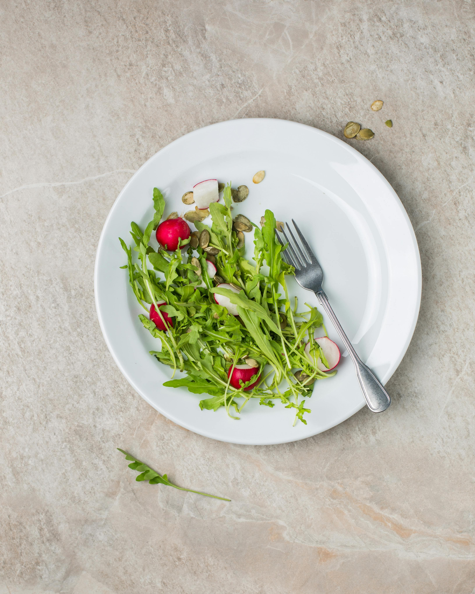

איך לאכול עם שיניים תותבות חדשות? המדריך למתחילים
השורה התחתונה (תקציר):
- התחילו בתזונה רכה (מרקים, דייסות) בשבועות הראשונים עד להסתגלות החניכיים.
- חתכו את האוכל לחתיכות קטנות ואל תנגסו בעזרת השיניים הקדמיות כדי לא לעקור את התותבת.
- כלל הברזל: לעסו את המזון בשני צדי הפה בו-זמנית כדי לשמור על יציבות התותבת.
- הימנעו ממאכלים קשים (אגוזים), דביקים (טופי) ומאכלים חמים מאוד (התותבת העליונה מבודדת חום ומונעת תחושת כוויה).
קבלת שיניים תותבות חדשות היא רגע משמח, אבל היא מלווה גם בתקופת הסתגלות. בימים ובשבועות הראשונים, פעולת הלעיסה עשויה להרגיש שונה, מעט מאתגרת ואפילו לא טבעית. אל דאגה – זה טבעי לחלוטין! הנה כל הטיפים שיעזרו לכם לחזור ליהנות מהאוכל שאתם אוהבים, שלב אחר שלב.
1. התחילו לאט ועם תזונה רכה
בימים הראשונים לאחר הרכבת התותבות, הרקמות בפה עדיין מסתגלות לנוכחות הגוף הזר. כדאי להתחיל עם תזונה רכה שאינה דורשת מאמץ לעיסה משמעותי. מאכלים כמו דייסות, מרקים, פירה, יוגורטים, ביצים מקושקשות ודגים רכים הם בחירה מצוינת. כך תתרגלו לתחושת התותבות בפה מבלי להפעיל לחץ מיותר על החניכיים.
2. חתכו את האוכל לחתיכות קטנות
כאשר אתם עוברים למזון מוצק יותר (כמו עוף, פירות רכים או ירקות מבושלים), הקפידו לחתוך את האוכל לחתיכות קטנות מאוד. אל תנסו לנגוס ישירות במזון בעזרת השיניים הקדמיות (למשל תפוח או כריך), מכיוון שפעולה זו עלולה לערער את יציבות התותבת ולגרום לה להתרומם מאחור.
3. לעסו בשני צדי הפה בו-זמנית
זהו אולי הטיפ החשוב ביותר: בניגוד לשיניים טבעיות בהן אנו רגילים ללעוס בצד אחד בכל פעם, עם שיניים תותבות מומלץ ללעוס את המזון בשני צדי הפה במקביל (קצת בכל צד). פיזור שווה של הלחץ על התותבת מונע ממנה להתנדנד. אם התותבת עדיין זזה, ייתכן שהיא זקוקה לריפוד או שאתם נדרשים להשתמש בדבק לשיניים תותבות באופן זמני.
היבטים ביומכניים: אדפטציה נוירו-מוסקולרית וסגר מאוזן
בעת איבוד שיניים טבעיות, המטופל מאבד גם את הליגמנט הפריודונטלי (PDL) שמכיל קולטני תחושה (Proprioceptors) המעבירים למוח מידע מדויק על עוצמת הלעיסה. עם המעבר לתותבות, העומס اللעיסתי מועבר ישירות לרקמת הרירית (Mucosa), בעלת סף סיבולת נמוך בהרבה. לכן, עיקרון ה"סגר הבילטרלי המאוזן" (Bilateral Balanced Occlusion) הופך לקריטי: לעיסה דו-צדדית סימולטנית מונעת יצירת כוחות מנוף (Leverage) עוקרים שמערערים את היציבות הסטטית של התותבת. סטנדרטים בינלאומיים של ארגון הבריאות העולמי (WHO) לגריאטריה מציינים כי שיקום יעילות הלעיסה (Masticatory efficiency) אצל בני הגיל השלישי חיוני למניעת תת-תזונה (Malnutrition) והידרדרות קוגניטיבית, ולכן שלב האדפטציה הנוירו-שרירית מחייב מעקב וסבלנות מצד המטופל והרופא כאחד.
4. היזהרו ממאכלים חמים במיוחד
הפלסטיק האקרילי שממנו עשויות התותבות נוטה לבודד חום. המשמעות היא שאתם עלולים לא להרגיש את הטמפרטורה האמיתית של מרק או משקה חם דרך התותבת העליונה (המכסה את החך), מה שמעלה את הסיכון לכוויות בגרון או בחלק האחורי של הפה. בדקו תמיד את טמפרטורת המזון עם השפתיים לפני שתכניסו אותו לפה.
5. ממה כדאי להימנע בשבועות הראשונים?
עד שתרגישו ביטחון מלא, כדאי להימנע מהמאכלים הבאים:
- מאכלים קשים ופציחים: אגוזים, קרח, סוכריות קשות, וקליפות של לחם.
- מאכלים דביקים: סוכריות טופי, קרמל, מסטיקים או חמאת בוטנים – אלו עלולים למשוך את התותבת ממקומה ולהוציא אותה מהוואקום.
- מזון עם גרעינים קטנים: גרעיני שומשום, פרג או פירות יער עלולים להיתקע בין התותבת לחניכיים ולגרום לכאב חד וגירוי.
התותבת עדיין מכאיבה או זזה בזמן האוכל?
אם עבר זמן מה ואתם עדיין מתקשים ללעוס או סובלים מפצעי לחץ, ייתכן שהתותבת דורשת התאמה עדינה או ריפוד. אנו נגיע עד אליכם הביתה כדי לבדוק, להתאים ולדאוג שתוכלו לאכול בנוחות.
צרו קשר לייעוץ ללא התחייבות